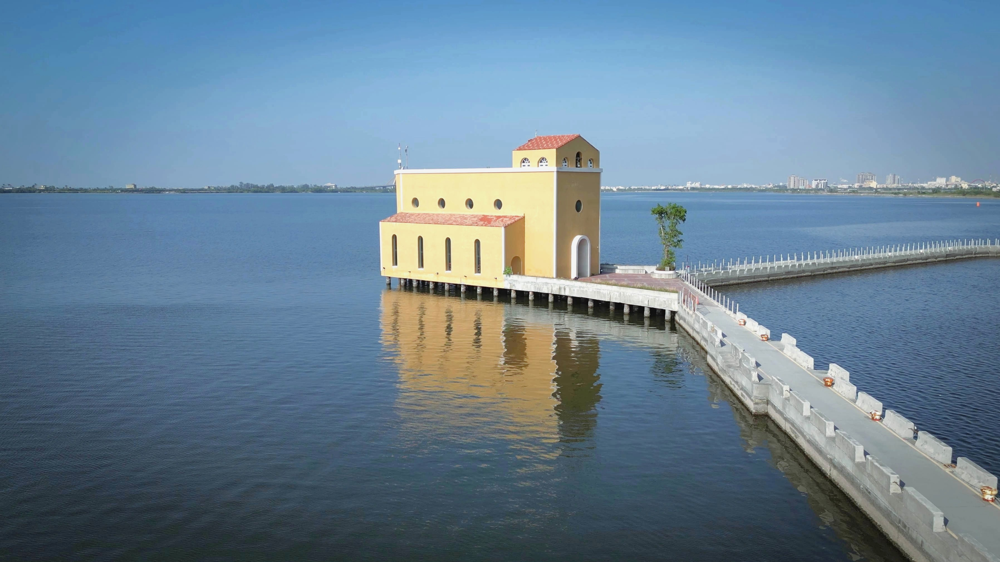
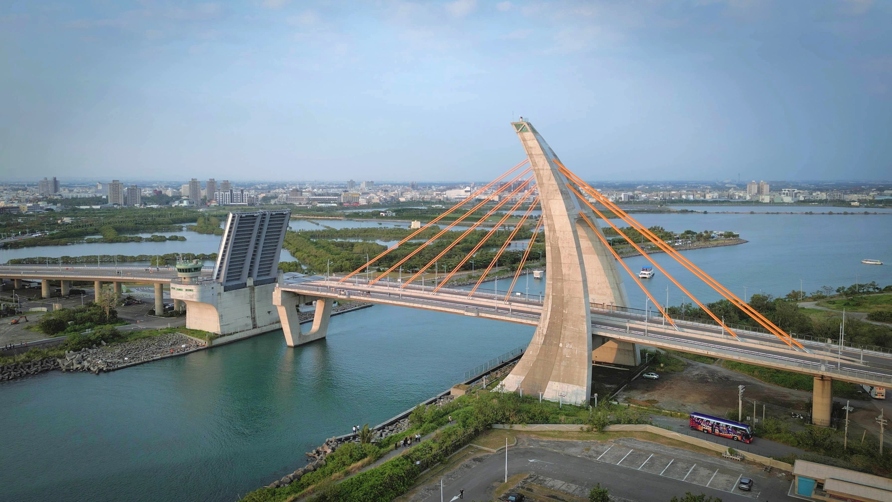
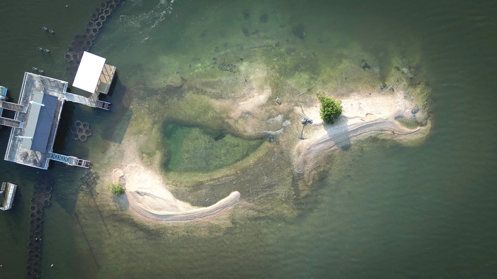
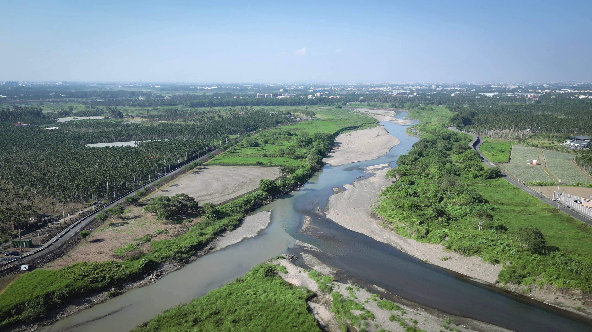
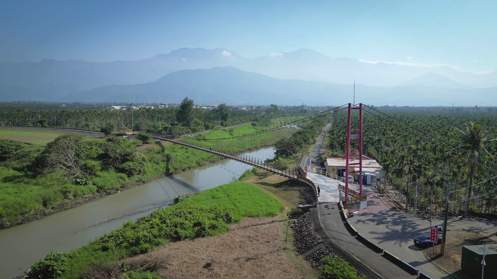
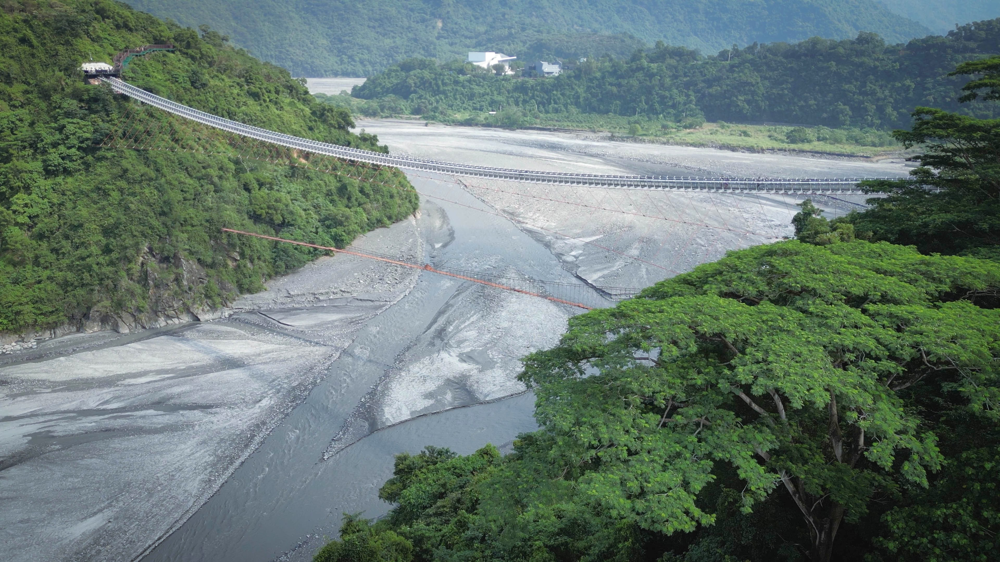

鵬灣跨海大橋
全長579公尺，橋面寬30公尺，於2011年3月正式通車啟用，本座跨海大橋為特殊三向度設計的斜張橋，橋身側看如揚帆啟航，背面如英文字母A，最大的特色還是全台首座可開啟式的橋樑。
本作品為通識課程〈無人機生態影像解析〉之期末成果。
希望透過空拍視角，帶領大家瞰見屏東的山海風光，感受屏東之美。
通識課程: 無人機生態影像解析
這門課程從認識環境議題、學習無人機操作到實地影像拍攝，讓我們思考如何將科技應用於環境永續。
全長579公尺，橋面寬30公尺，於2011年3月正式通車啟用，本座跨海大橋為特殊三向度設計的斜張橋，橋身側看如揚帆啟航，背面如英文字母A，最大的特色還是全台首座可開啟式的橋樑。

全台第一座「海上教堂」就佇立在大鵬灣灣域內。走過300公尺長的海堤，陣陣海風吹拂，童話一般的鵝黃色建築外觀，西班牙式建築設計、挑高玻璃窗，增添不少浪漫異國氛圍。並結合愛心鎖牆、幸福鐘等浪漫週邊裝置，成為拍照打卡的新興景點。雖然外觀如同教堂，但其實這是一間景觀咖啡廳。

由於大鵬灣屬於單口囊狀潟湖，跨海大橋下即是潟湖唯一的進出海口，若設立橋樑雖可以達到陸運作用，卻阻斷了未來潟湖內遊艇港及帆船中心的發展方向。在這樣的時空背景下，全台首座可開啟式橋梁應運而生，單向開啟75度仰角，跨距達20公尺的開橋秀，也成了每個假日來到大鵬灣不容錯過的一場獨門秀。

「蚵殼島」是從前大鵬灣蚵民不經意的傑作。大家相約成俗，集中將蚵殼傾倒此處，經數十年後形成了這個蚵殼島。這座蚵殼島面積約有7150平方公尺，像是一座漂浮在水面上的島嶼。

東港溪之名是由屏東縣的東港鎮而來，東港之意，原為「位於下淡水溪的東邊」。過去東港溪河口是相當繁榮的貿易地與物資交換地點，清朝時就在東港溪沿岸形了三個街市，分別是萬丹街，新園街和崁頂街。

全長約168公尺，寬2公尺，橋面結合3D立體彩繪，吊橋被規劃為自行車道，只開放為徒步及單車通行，遼闊的視野能遠眺北大武山，也是東港溪賞鳥的絕佳地點，是座適合賞美景的單車吊橋。

東港溪畔旁的河堤不僅是附近居民午後散步、騎單車的好去處，沿岸更時常可以看見悠閒放牧的牛群，構成一幅自然純樸的田園風光。

佔地約30公頃，主要展示臺灣客家文化。園區分成自然草原區、田園地景區、傘架客家聚落區及九香花園伯公區四大區域。六堆園區保存與展示高雄市、屏東縣十二個客庄的客家生活風貌。園區地標是六座傘架聚落式建築，表達了客家元素斗笠與紙傘意象。

全長262公尺，距離高度約45公尺，吊橋向下即可俯瞰壯闊的山巒美景，因而取名為「山川琉璃吊橋」。橋身設計以代表排灣族、魯凱族的琉璃珠為意象，兩邊有原住民百步蛇圖騰，訴說著原住民的故事。

屬於高屏溪水系，為高屏溪的最大支流。隘寮溪也被稱爲魯凱族群與排灣族群文明的母親之河。